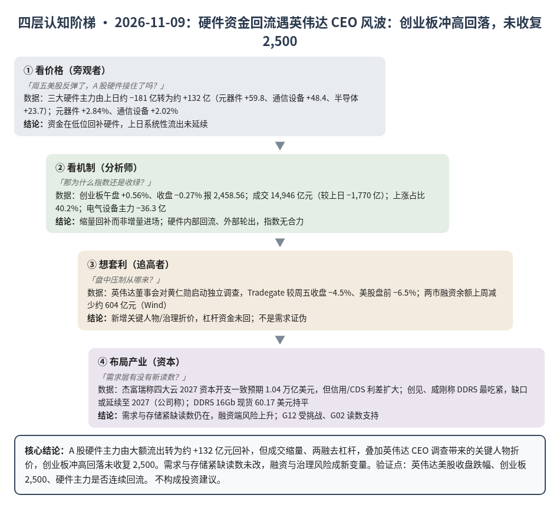
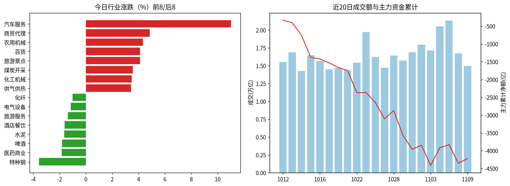
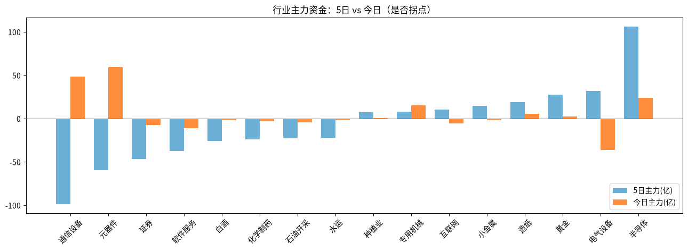

A股投研日报 · 2026-11-09（四层认知版）
- 主线
- 硬件资金低位回补，但英伟达 CEO 风波压顶，创业板冲高回落未收复 2,500
- 最重要变化点
- 三大硬件主力由上日约 −181 亿转为约 +132 亿（元器件 +59.8、通信设备 +48.4、半导体 +23.7）；创业板仍 −0.27% 收 2,458.56
- 机制含义
- 缩量回补（成交 14,946 亿，较上日 −1,770 亿）、两融上周降约 604 亿，杠杆未回；英伟达关键人物风险成新估值折价
- 下一个观察点
- 11/10 创业板收盘能否 ≥2,500；前提看今晚英伟达美股收盘跌幅是否 >5%（盘前 −6.5%）
本报告为基于公开数据的研究分析，不构成投资建议。
今日市场概况
数据管道速览（Tushare 收盘数据，规则生成，正文判断见下文）
- 指数：上证指数 +0.32% 收 3,660.79，创业板指 -0.27% 收 2,458.56；深证成指 -0.27%、科创50 +0.30%、上证50 +0.06%、沪深300 +0.05%、中证500 -0.17%、中证1000 -0.09%（Tushare）。
- 量能与宽度：成交 14,946 亿元（20 日均 16,534 亿元）；上涨 2,242 家 / 下跌 3,148 家，上涨占比 40.2%，个股中位数 -0.3%。
- 主力资金：全 A 主力 +132.1 亿元，连续第 1 日净流入。
- 行业：主力流入居前 元器件（+59.8 亿）、通信设备（+48.4 亿）、半导体（+23.7 亿）；流出居前 电气设备（-36.3 亿）、软件服务（-10.9 亿）、证券（-7.1 亿）。
- 龙虎榜 / 北向：机构专用席位合计 +2.61 亿元；沪深股通成交前五 中际旭创、宁德时代、新易盛、寒武纪、东山精密（成交额≠净买入）。
变化点
方法：四层认知阶梯 + 历史周期律。数据 Tushare（见附录）。不构成投资建议。
一、世界观定位
阶段不变，回退条件不变。楚汉层：商务部称落实中美第八轮经贸磋商共识，自 11/10 起继续暂停对 16 家美国实体的出口管制措施 2 个月（源），制度开关偏缓和。10 月 PPI 同比 +5.7%、CPI +0.7%（源、源）。世界指标今日更新在跑、发布时未完成，五盏灯沿用 11/04 读数（3 黄 2 红：估值、中国信用）。
二、变化一（主变化）：硬件主力转回流，英伟达 CEO 调查压住反弹
- 看价格：元器件 +2.84%、通信设备 +2.02%、半导体 +0.66%；但创业板午盘 +0.56%、收盘 −0.27% 报 2,458.56，上证 +0.32%。成交 14,946 亿元，上涨占比 40.2%。
- 看机制：全 A 主力 +132.1 亿元，三大硬件合计约 +132 亿元，电气设备 −36.3 亿元——硬件内部回补、其他板块轮出，缩量下没有增量。两市融资余额上周减少 603.55 亿元（Wind，源），杠杆仍在退。
- 想套利：周末黄仁勋承认婚外情、董事会启动独立调查，英伟达美股盘前 −6.5%（源）；伯恩斯坦称不太可能直接影响需求，但加大监管与关键人物风险（源）。推断午后回落与夜盘跌幅扩大同步。
- 布局产业：杰富瑞称四大云 2027 资本开支一致预期已达 1.04 万亿美元，但信用/CDS 利差扩大（源）——融资端是 G12 的新挑战读数；需求本身尚无下修。
判断：主要矛盾从"估值去杠杆是否闭环"加上一层"龙头治理折价"。资金愿意低位回补，但没有增量与杠杆，2,500 仍是压力位。
三、变化二：存储紧缺从原厂传到模组与终端
创见、威刚称 DDR5 最吃紧，明年一季度可得供应低于四季度、缺口或延续至 2027（公司称，源）；特斯拉 AI6 的 LPDDR6 容量据报由 216GB 减至 144GB（源）。DDR5 16Gb 现货 60.17 美元，较上日持平。
判断：终端开始"减配保量"，晶圆被 HBM 挤占的机会成本在扩散，G02 读数支持；现货未涨，价格尚未确认。
四、上一交易日验证点回顾（11/6 → 11/9）
| 验证点 | 结果 |
|---|---|
| 创业板收回 2,500 | 未命中：−0.27% 收 2,458.56 |
| 美股芯片收盘确认反弹 | 命中：周五纳指 +1.10%、英伟达 +2.87%（源） |
| 本周美元指数守 102 上方 | 待验证：周五尾盘 102.31；今日快讯称跌破 101，口径待核 |
| DDR5 16Gb 跌破 59.66 美元 | 未命中：60.17 美元，持平 |
五、供应链风险敞口（人工复核版）
脚本版见 risk_section_20261109.md。口径为 GB300/NVL72 当量柜年化系统价值；Δ$ 为事件类型假设模板，仅用于排序，非预测。脚本 7 条，误匹配 7 条（扩产/研报/行情/小震）。复核后有效断供 Δ$≈0，基线维持年化 EL 57.7 亿美元（10/21）。采集降级：GDELT 限流，巨潮公告匹配未恢复。
六、机会表（产业/环节层面，不构成投资建议）
| 环节 | 逻辑 | 证伪条件 |
|---|---|---|
| 半导体（观察回补） | 5 日主力 +106 亿，今日续流入 | 英伟达风波发酵、半导体主力转大额流出 |
| 存储/模组环节 | 模组厂称缺货、终端减配 | DDR5 现货跌破 59.66 美元 |
| 黄金 | 主力连续 5 日流入，现货破 4,130 美元 | 美元指数站稳 102 上方 |
中长期展望（3–12 个月与 2027）
3–12 个月：估值灯仍红，AI 硬件处在去杠杆后段；G12 的挑战从股价转向融资端（信用利差），需求读数仍靠财报与指引。
2027：P023（四大云 2027 资本开支合计 ≥ 8,500 亿，概率 0.55）仍是总闸门，一致预期已高于阈值；G02 机制在扩散到模组与终端。
什么会改变展望：①任一大云下修 2027 资本开支；②英伟达管理层变动导致指引延后；③DDR5 现货单周跌超 3%。
七、明日/本周验证点（可证伪）
- 11/10 创业板收盘 ≥2,500；否则震荡寻底延续。
- 今晚英伟达美股收盘跌幅 ≤5%；若超 5%，11/10 三大硬件主力合计是否转负。
- 本周美元指数收盘是否跌破 101。
- 本周 DDR5 16Gb 现货是否跌破 59.66 美元。

一句话总结：硬件资金低位回补，但英伟达 CEO 风波压顶，创业板冲高回落未收复 2,500。
本报告为基于公开数据的研究分析，不构成任何投资建议。
附录：市场数据（证据底稿）


| 收盘 | 今日% | 5日% | 20日% | MA20 | 成交(亿) | |
|---|---|---|---|---|---|---|
| 上证指数 | 3,660.79 | 0.32 | 0.63 | -3.59 | 3,686.48 | 6,825.33 |
| 深证成指 | 11,145.49 | -0.27 | 1.22 | -10.01 | 11,483.94 | 3,960.29 |
| 创业板指 | 2,458.56 | -0.27 | -0.01 | -17.05 | 2,623.00 | 1,677.97 |
| 科创50 | 1,256.96 | 0.30 | 5.01 | -11.90 | 1,292.10 | 717.34 |
| 上证50 | 2,789.15 | 0.06 | 0.96 | -1.07 | 2,769.42 | 1,041.27 |
| 沪深300 | 4,056.11 | 0.05 | 0.98 | -5.41 | 4,101.27 | 3,952.05 |
| 中证500 | 6,586.18 | -0.17 | 2.58 | -7.15 | 6,671.91 | 2,523.64 |
| 中证1000 | 6,499.74 | -0.09 | 2.69 | -7.43 | 6,587.05 | 2,978.49 |
行业资金热力（按5日主力净额排序，前8/后8）
| industry | 今日% | 5日% | 20日% | 今日主力(亿) | 5日主力(亿) | 资金连续天数 |
|---|---|---|---|---|---|---|
| 半导体 | 0.7 | 5.7 | -5.2 | 23.7 | 106.2 | 1.0 |
| 电气设备 | -1.1 | 7.3 | -4.5 | -36.3 | 31.9 | -2.0 |
| 黄金 | 1.3 | 17.5 | -6.2 | 2.4 | 27.8 | 5.0 |
| 造纸 | 1.2 | 6.8 | -3.1 | 5.5 | 19.2 | 6.0 |
| 小金属 | 0.3 | 6.2 | -13.0 | -1.7 | 14.6 | -2.0 |
| 互联网 | -0.4 | 5.8 | 6.5 | -5.5 | 10.3 | -2.0 |
| 专用机械 | 1.9 | 5.4 | -5.5 | 15.5 | 8.2 | 1.0 |
| 种植业 | 2.3 | 13.2 | -15.2 | 0.5 | 7.6 | 2.0 |
| 通信设备 | 2.0 | -6.3 | -33.2 | 48.4 | -98.8 | 1.0 |
| 元器件 | 2.8 | 0.5 | -16.6 | 59.8 | -59.5 | 1.0 |
| 证券 | -0.4 | -0.1 | -3.3 | -7.1 | -46.6 | -5.0 |
| 软件服务 | -0.1 | 4.3 | 4.7 | -10.9 | -37.5 | -2.0 |
| 白酒 | -0.3 | 0.2 | 13.7 | -2.1 | -25.6 | -4.0 |
| 化学制药 | 1.1 | 5.1 | 26.5 | -3.2 | -23.9 | -2.0 |
| 石油开采 | -0.3 | -7.9 | -2.2 | -4.2 | -22.5 | -1.0 |
| 水运 | 0.9 | -5.7 | -14.3 | -1.6 | -22.2 | -7.0 |
市场情绪时间序列（近10日）
| trade_date | 成交(亿) | 上涨占比% | 主力净额(亿) | 个股中位涨跌% |
|---|---|---|---|---|
| 20261027 | 14729.0 | 10.9 | -462.7 | -3.0 |
| 20261028 | 16421.0 | 74.6 | 229.2 | 1.3 |
| 20261029 | 15707.1 | 14.0 | -694.9 | -2.6 |
| 20261030 | 16877.1 | 16.0 | -391.8 | -3.1 |
| 20261102 | 17951.9 | 84.0 | 114.9 | 2.0 |
| 20261103 | 17150.9 | 37.8 | -568.2 | -0.7 |
| 20261104 | 20518.9 | 83.8 | 497.2 | 1.9 |
| 20261105 | 21351.0 | 87.4 | 86.9 | 2.0 |
| 20261106 | 16716.0 | 13.6 | -524.0 | -1.9 |
| 20261109 | 14945.5 | 40.2 | 132.1 | -0.3 |
今日上涨2242家/下跌3148家，涨幅≥9.8% 75家、跌幅≤-9.8% 6家¹。
龙虎榜侧写：机构专用席位合计 +2.61 亿；净买入居前 凡拓数创(+1.71亿)、上海电影(+1.28亿)、燧原科技(+1.21亿)，净卖出居前 华新建材(-1.46亿)、思美传媒(-1.19亿)、亚钾国际(-1.11亿)。 沪深股通活跃股：成交前五为中际旭创、宁德时代、新易盛、寒武纪、东山精密（成交额≠净买入）。
注：¹涨跌停为按±9.8%阈值近似（limit_list_d无权限）。²行业为Tushare stock_basic分类自行聚合（sw_daily/ths_daily/行业资金流接口无权限），成交加权、剔除N/C新股，成分≥8只。³主力=大单+特大单净额（moneyflow）。⁴2024年8月起北向每日净买入停止披露，moneyflow_hsgt/hsgt_top10数值为成交口径，不可解读为净流入。⁵新闻/公告接口无权限，改用新浪财经7x24公开快讯自动抓取+人工补充。
接口状态：trade_cal:OK；stock_basic:OK；index_daily:OK；moneyflow_hsgt:OK；hsgt_top10:OK；top_list:OK；top_inst:OK；index_dailybasic:OK；新浪7x24(公开):OK 3895条（11-06 14:46 起）